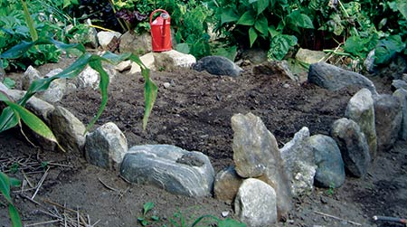

Healthy soil is a critical component of any successful garden. By establishing a permanent garden layout in which beds and walking paths remain in place, from year to year, you can minimize soil compaction and create a great garden that’s healthy and easy to maintain. Soil needs air and water to function, and compaction from foot traffic robs it of both.
Permanent beds can be any size or shape, as long as you can reach into the center while standing in the paths. Edging is optional, although many gardeners like the look of borders such as logs, boards or stones.
Raised beds are a good idea for sites with clay soil or areas with poor drainage. Gardeners who want to extend their growing season to early spring and late fall also benefit from the warming effect produced by raised beds.
Your new permanent garden structure will naturally raise the beds a little higher than the compacted soil of the paths, but you can till the paths and shovel the loose soil onto the beds to raise them even more. Note that your plants will require more water during dry periods if you add more than a few extra inches of soil.
To get started, try one of these three simple bed-building techniques:
Plan A: Till, compost, till. First till the area to kill the grass, then add a few inches of compost or grass clippings and till again. There’s bound to be remaining weed seeds in the mix; you can eliminate them by watering the area, then hoeing sprouts as they appear after a week or two. If possible, repeat the water/hoe sequence several times prior to planting.
Plan B: No till. Prep the garden area simply by covering it with cardboard or a few layers of wet newspaper under several inches of grass clippings, leaves, or hay or straw. You can cut holes in the mulch and set out transplants with a little organic fertilizer immediately. You’ll want to wait several months to plant seeds, however, to allow the sod to die and the paper to decompose. (For more information on alternatives to tilling, read Build Better Garden Soil.
Plan C: Instant Beds. Veteran gardener David Cavagnaro uses this method on his Iowa homestead with great results: Arrange bags of topsoil with drainage holes punched in the bottom over the plot, completely covering it. Cut the plastic off the tops of the bags and voila, you’re ready to plant your seeds. The plastic bags can be hidden by mulching with grass clippings or leaves. When the season’s over, pull away the plastic and turn the topsoil into the ground in preparation for the next year.
Once you’ve organized your new garden layout, it’s a good idea to have your soil tested. Adding the wrong fertilizers or too much of one type can cause permanent damage. The test is often only $10 to $20 and will tell you what amendments, if any, need to be added before you plant.
Finally, don’t forget to add compost annually. Even just a thin quarter-inch layer will improve your fertility and your soil’s capacity to hold water and fertilizers. This and the reduced compaction made possible by the permanent paths are the keys to maintaining fertile, low-maintenance soil. (Anyone can make their own compost - see Compost Made Easy.)
Feel free to share your permanent bed-building ideas by posting a comment below. Not sure what to plant? Read 10 Best Garden Crops for Beginners by Senior Associate Editor Megan Phelps for a list of crops that are easy to grow and cook.
Start now if you want a garden full of veggies this summer!
Adapted from Build Permanent Beds and Paths by Editor in Chief Cheryl Long.
|
 JESSICA CLICK Gardeners who want to extend their growing season to early spring and late fall will benefit from the warming effect produced by raised beds. |
|
|